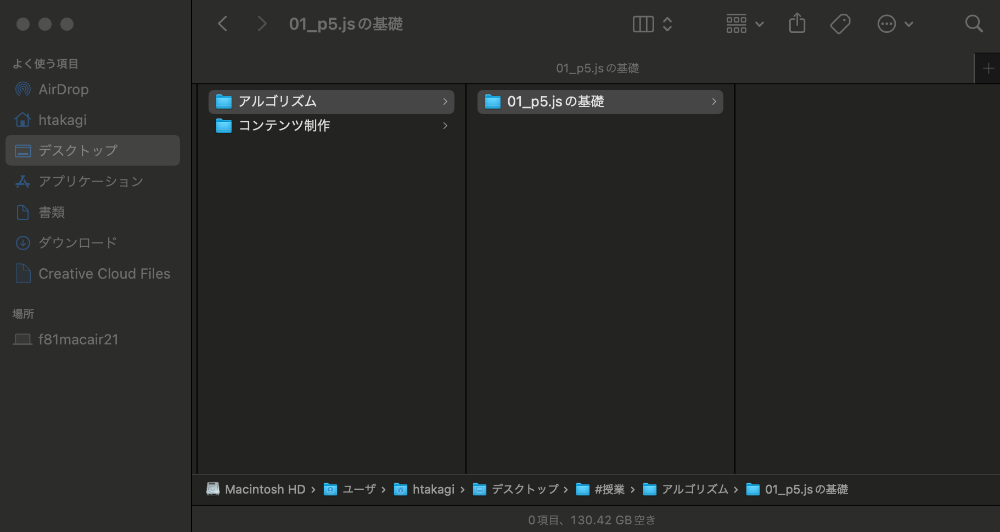
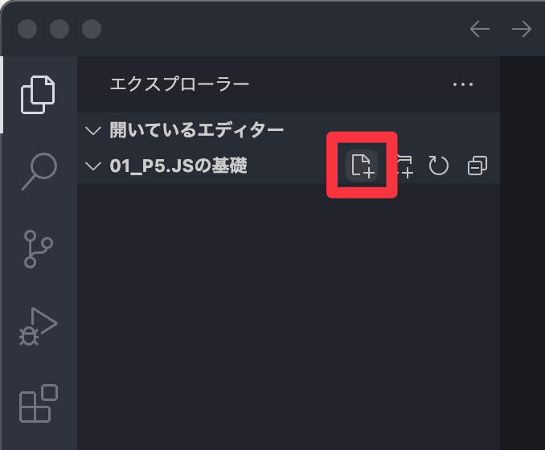
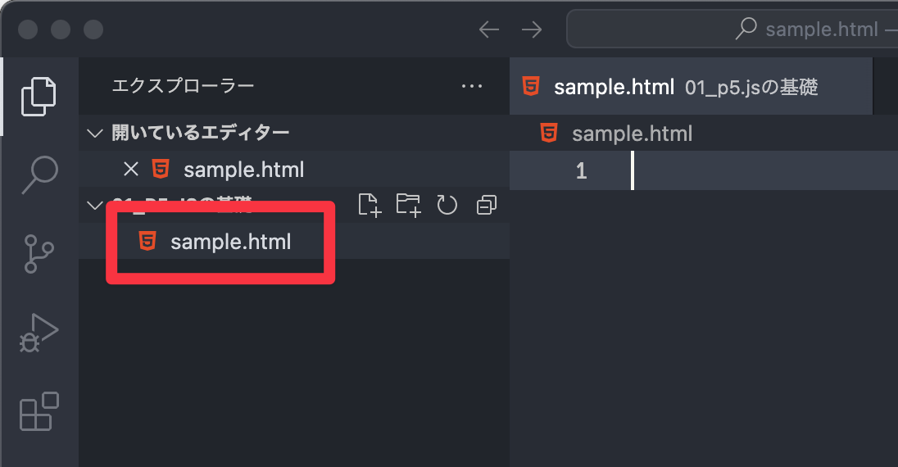
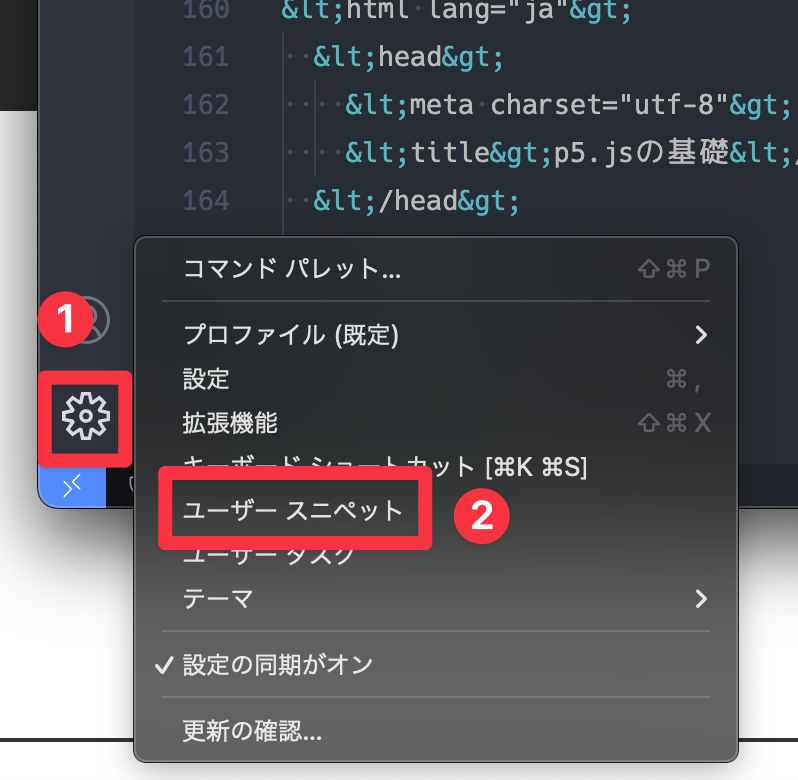
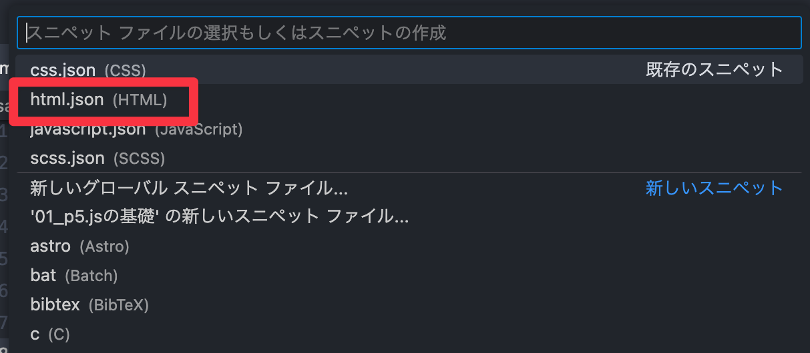
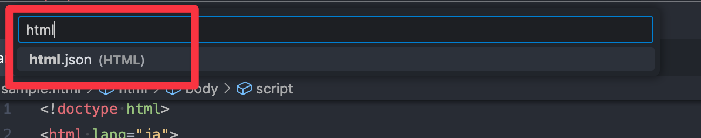

1. 準備
1-1. p5.jsの実行方法
- OpenProcessingで書く。
- 「p5.js Web Editor」で書く。
- パソコン上にp5.jsを読み込んで書く。
1-1. 事前準備
デスクトップが綺麗な人は、仕事が早い！
- 任意の場所に「アルゴリズム」用のフォルダを作成する。（command + shift + n）
-
コマごとにデータをフォルダ分けする。（番号、日付、単元名などをフォルダ名にする「アルゴリズム
/ 01_p5.jsの基礎」）

1-2. HTMLファイルの準備
- 「Visual Studio Code」を立ち上げる。「ようこそ」などが開いている人は閉じておく。
- 先ほど作成したこの単元用のフォルダを、マウスでドラッグ&ドロップ。もしくは、メニュー『ファイル > フォルダーを開く...』でフォルダを選択。
- 「作成者を信頼しますか？」と聞かれたら、「親フォルダーすべてを信頼します」にチェックを入れ、「はい、作成者を信頼します」をクリック。
-
画面左側にマウスカーソルを移動すると下図のようなアイコンが表示されるので、「新規ファイル」をクリック。

-
「sample.html」と入力して「returnキー」を押す。

- フォルダ内にファイルが作成されていることを確認して、準備完了！
- ※ネット上に公開するファイルは、すべてアルファベットで保存すること。（文字化けや読み込みエラーの原因になる）
- 【HTMLの基本構造】
-
<!doctype html> <html lang="ja"> <head> <meta charset="utf-8"> <title>p5.jsの基礎</title> </head> <body> </body> </html>
1-3. p5.jsの読み込み
<!doctype html>
<html lang="ja">
<head>
<meta charset="utf-8">
<title>p5.jsの基礎</title>
</head>
<body>
<!-- ここから追加 -->
<script src="https://cdn.jsdelivr.net/npm/p5@1.9.2/lib/p5.js"></script>
<script>
</script>
<!-- ここまで追加 -->
</body>
</html>- 【スニペットの登録】
-
-
VSCode左下の歯車アイコンをクリックし「ユーザー
スニペット」を選択。

-
画面上部に入力欄が表示されたら、一覧の中から「html.json」を選択。

-
一覧に「html.josn」が無い人は、入力欄に「html」と入力して選択。

-
以下のソースコードをコピペ。
{ "Syntax Highlighter": { "prefix": "p5", "scope": "html", "body": [ "<script src=\"https://cdn.jsdelivr.net/npm/p5@1.9.2/lib/p5.js\"></script>" "<script>" "</script>" ] } } - sample.htmlに戻り、「p5」と入力して「return（Enter）」を押してみる。
-
VSCode左下の歯車アイコンをクリックし「ユーザー
スニペット」を選択。